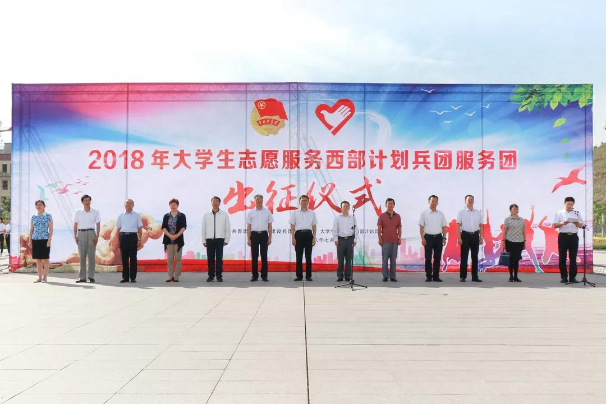

兵团西部计划出征 新时代新青年践行新精彩
桂电志愿者网 日期：2018-07-30 来源：青春兵团
7月26日，2018年新疆生产建设兵团大学生志愿服务西部计划出征仪式举行。兵团党委副书记、副政委孔星隆出席并讲话，团中央青年志愿者行动指导中心党委书记刘剑波致辞，兵团团委党组成员、副书记查永杰主持仪式。

孔星隆代表兵团党委、兵团向来自全国各地的青年志愿者表示欢迎，他指出，从2003年至今的15年，全国万余名大学生志愿者响应党和国家号召，在兵团各个行业、各条战线上奉献建功，留疆比例逐年提高。大学生志愿者们通过真诚服务、勤勉敬业、奋发有为，展示了青春、热情和才干，赢得了各级党政的好评和职工群众的欢迎，展现了新时代青年的精神品格和价值追求。
孔星隆希望，新时代志愿者要深刻理解西部计划的重要意义，进一步提高政治站位和大局意识；要坚定理想信念、增长本领强根基，传承红色基因，坚定信念、忠诚于党，在脚踏实地中积极投身实践，努力成长为社会主义建设者和接班人；要在兵团改革、向南发展中立新功，发挥思维活跃、视野开阔的优势，坚定拥护改革、支持改革，走在改革前列、勇做改革先锋；要在兵地融合、民族团结中作贡献，继续发扬兵团光荣传统，牢固树立“兵地一盘棋”的思想，更好推动兵地青少年资源共享、优势互补、融合发展；要热爱新疆、扎根兵团有作为，以兵团为家、把兵团作为成就事业的乐土，在服务和干事创业中百炼成钢。
刘剑波代表西部计划全国项目办、团中央青年志愿者行动指导中心向即将奔赴各地开展服务的志愿者们表示感谢和敬意。他祝福志愿者们立足岗位，青春建功，努力将自己在大学里学到的专业知识转化为工作技能，在志愿服务中与各族青年和当地群众结下深厚的友谊；祝福志愿者们锤炼意志，加速成长，珍惜服务基层的机会，进一步形成正确的成长观，坚定跟党走中国特色社会主义道路的信念；祝福志愿者们平安健康，快乐生活，提高自护意识和自护能力，迅速加入西部计划志愿者团支部，有困难及时和各级项目办联系。

出征仪式上，表彰了2017-2018年度兵团西部计划优秀项目办、就业服务先进项目办，兵团党委组织部、编办、教育局、发改委、财政局、人社局、水利局、卫计委、扶贫办等兵团基层服务项目工作领导小组成员单位负责同志出席仪式并为各师市志愿服务队授旗。
据悉，今年兵团共接收来自全国各地的志愿者1200余名。他们经过为期4天的培训，将奔赴兵团14个师市，进行为期1至3年的基础教育、医疗卫生、农业科技、法律援助、青年工作等领域的志愿服务。
【责任编辑：李彦龙】